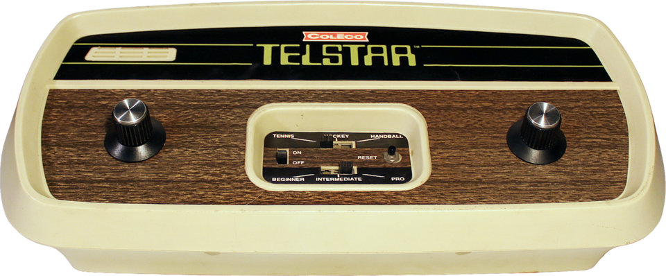

A Jornada dos Consoles: O surgimento do Coleco Telstar

Coleco Telstar foi uma série de consoles de videogame produzidos pela Coleco entre 1976 e 1978. Esses consoles eram clones do Pong baseados no chip General Instruments AY-3-8500.
Aqui estão alguns detalhes interessantes:
- História:
- O Coleco Telstar era básico em comparação com seus concorrentes da época, mas seu chip era o mesmo usado em muitos modelos posteriores.
- A simplicidade do Telstar foi um golpe de marketing, pois versões com o mesmo chip foram lançadas posteriormente com “grandes melhorias”.
- A Coleco liderou a primeira geração de videogames devido aos baixos preços e à sorte de receber todo o pedido do chip da General Instruments.
- Trazia três jogos: hóquei, handball e tênis, todos variantes do Pong
- A série Telstar incluiu vários modelos, como o Telstar Classic, Telstar Ranger, Telstar Colormatic e outros.
- Consoles das Séries Telstar:
- Coleco Telstar Alpha
- Coleco Telstar Arcade
- Telstar Classic
- Telstar Deluxe
- Telstar Ranger
- E outros.
Vídeo Ilustrativo: